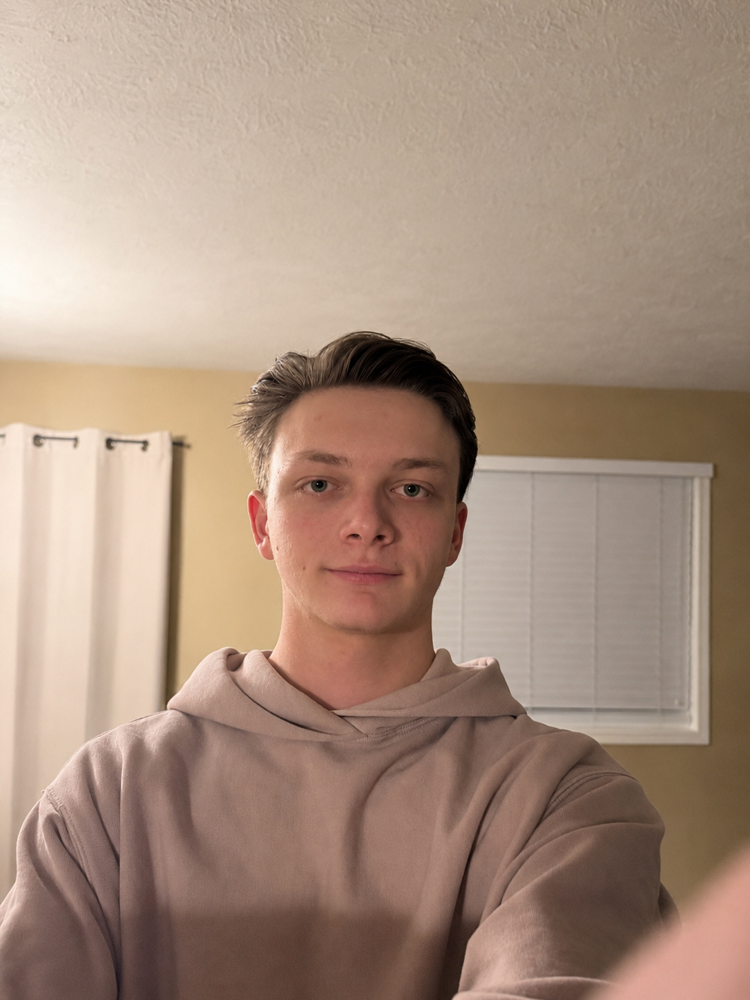

About Me

Hi I'm Gavin,
I'm a Computer Science student with a focus on software development and a strong interest in understanding how things work beneath the surface.
I've been programming for several years, starting with Python and eventually working with Java, C#, C++, and game development in Unity. A lot of my experience has come from building projects simply because I wanted to figure something out, whether that's implementing pathfinding algorithms, communicating directly with an IRC network, experimenting with simulations, or building a voxel renderer from scratch.
I've also spent time as a programming teaching assistant, where I helped students with Python and Unity/C# development. During that time, I built several projects of my own alongside the classes, helped students debug their programs, and occasionally created software for my instructor to use in the classroom.
I'm currently studying Computer Science and continuing to build projects that push me into areas I haven't worked with before. I'm particularly interested in software development, algorithms, graphics, simulations, game development, and lower-level programming.
Projects
A collection of software development, computer science, game development, and programming projects.